Lead white
Strips of lead corroded by vinegar fumes in pots buried in fermenting dung, a method known as the Dutch stack process.

 VermeerGirl with a Pearl Earring · c. 1665All 16
VermeerGirl with a Pearl Earring · c. 1665All 16A studio guide · Delft, about 1665
Imagine you are Johannes Vermeer, about to paint a girl in a blue and yellow turban. This guide follows what your process would have been, from your training and first decisions to the last stroke on the pearl.
The materials and the order of work come from technical studies of this exact painting, above all the Mauritshuis's 2018 examination, Girl in the Spotlight. Where that evidence runs out, the guide relies on Delft records and ordinary 1660s practice. Each chapter opens with a note on what its evidence is. The slider under the painting steps through eleven stages, from bare canvas to today; all but the last are AI reconstructions.
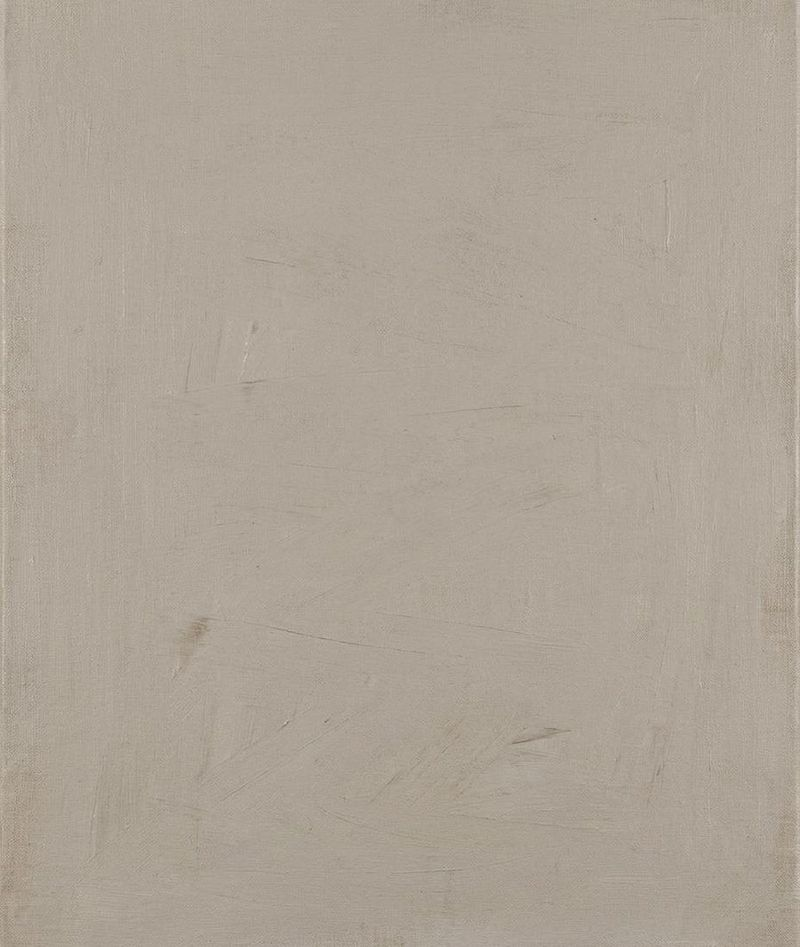
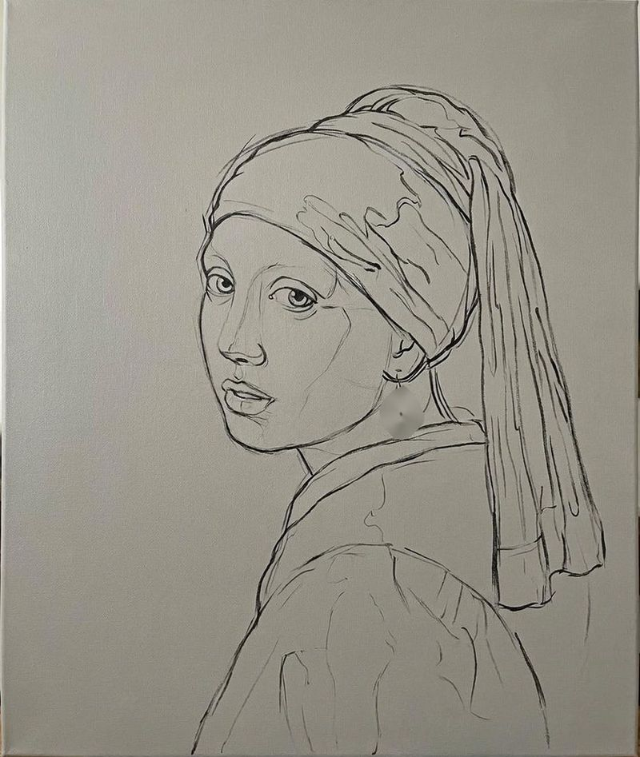
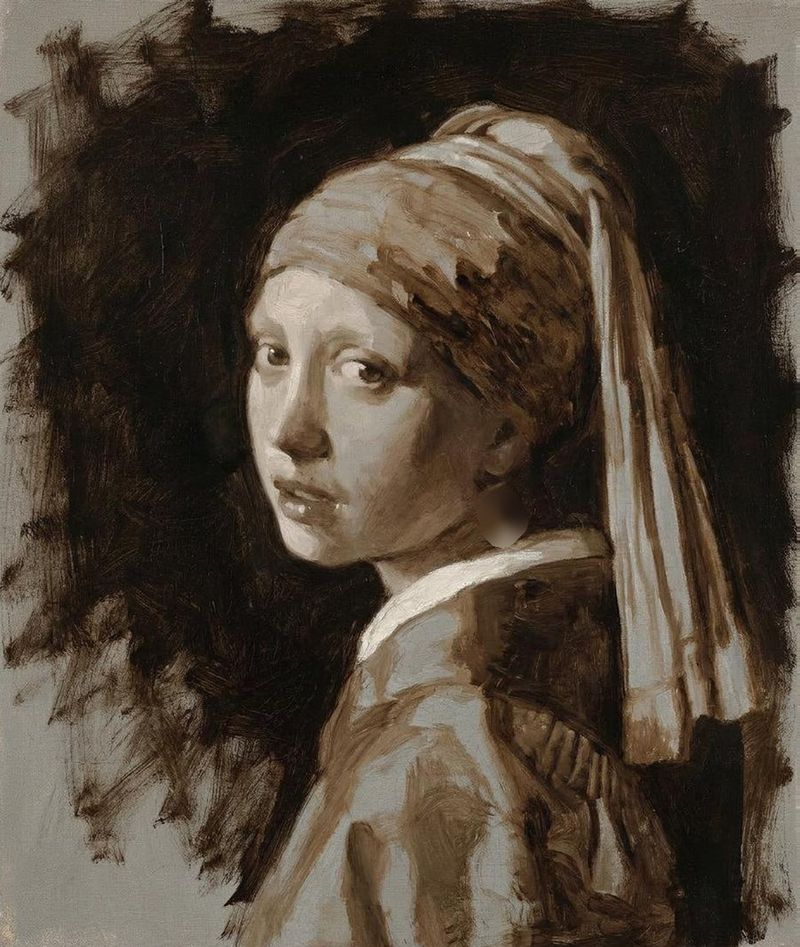
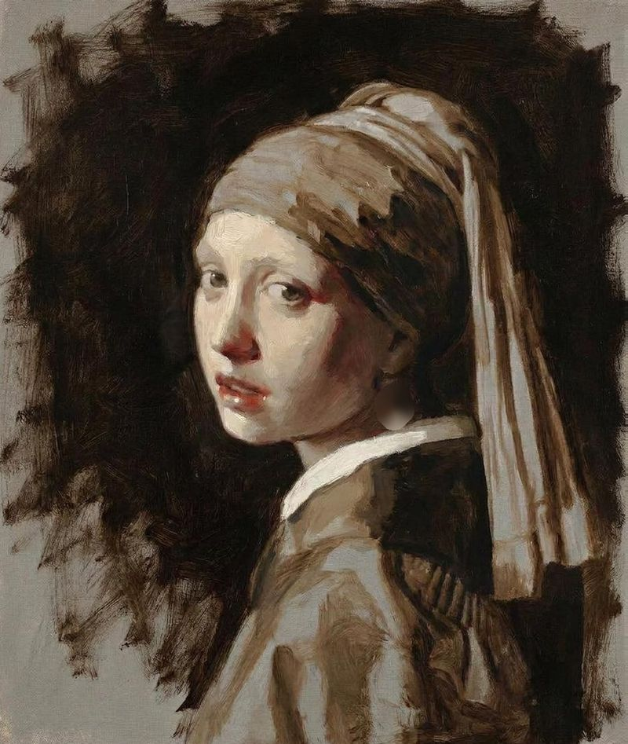
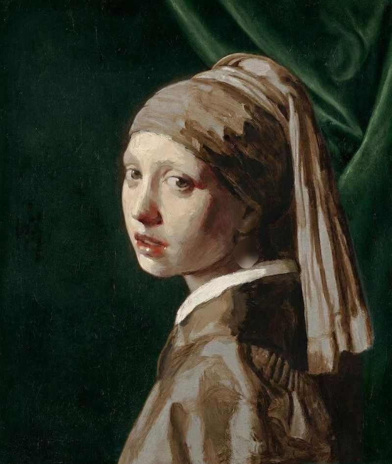
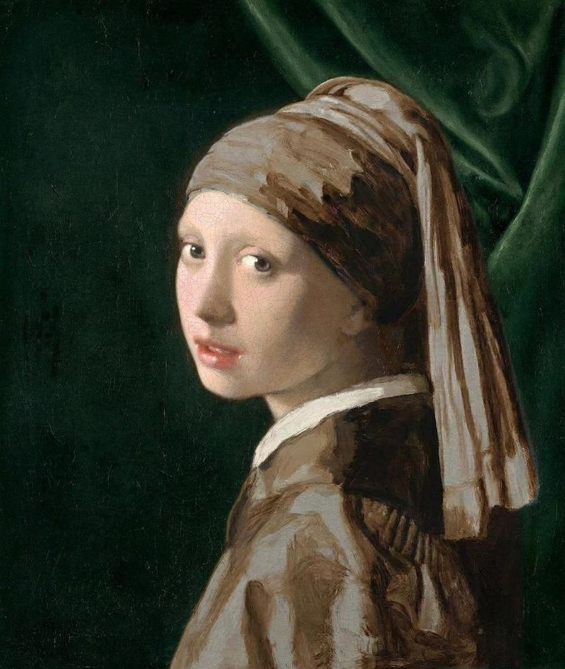
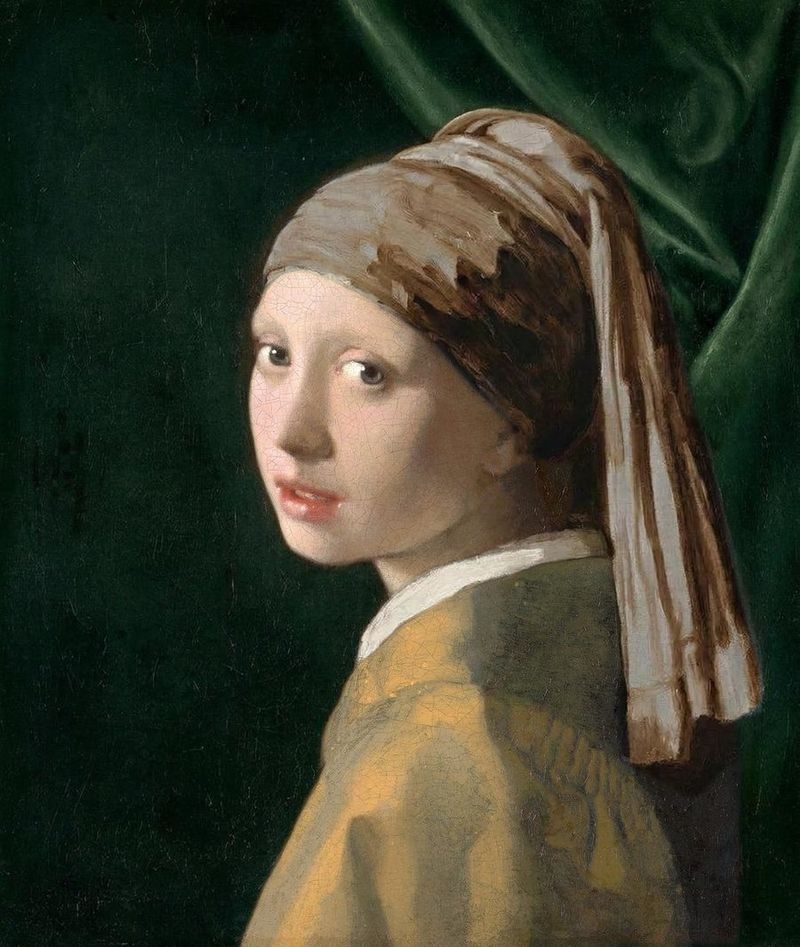
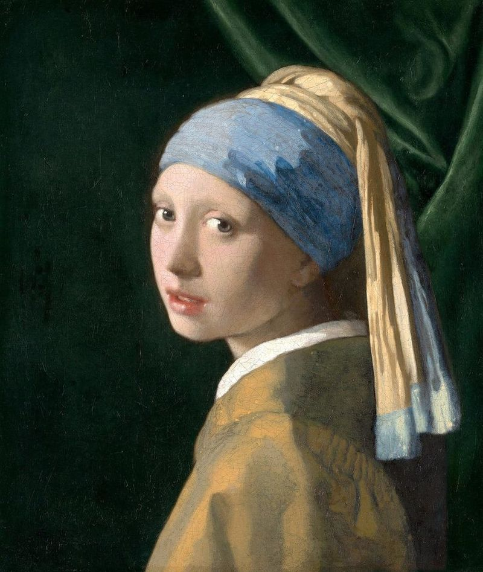
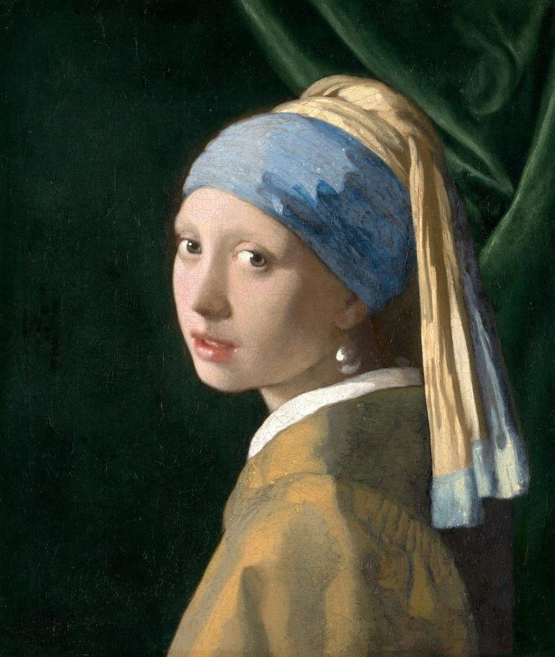
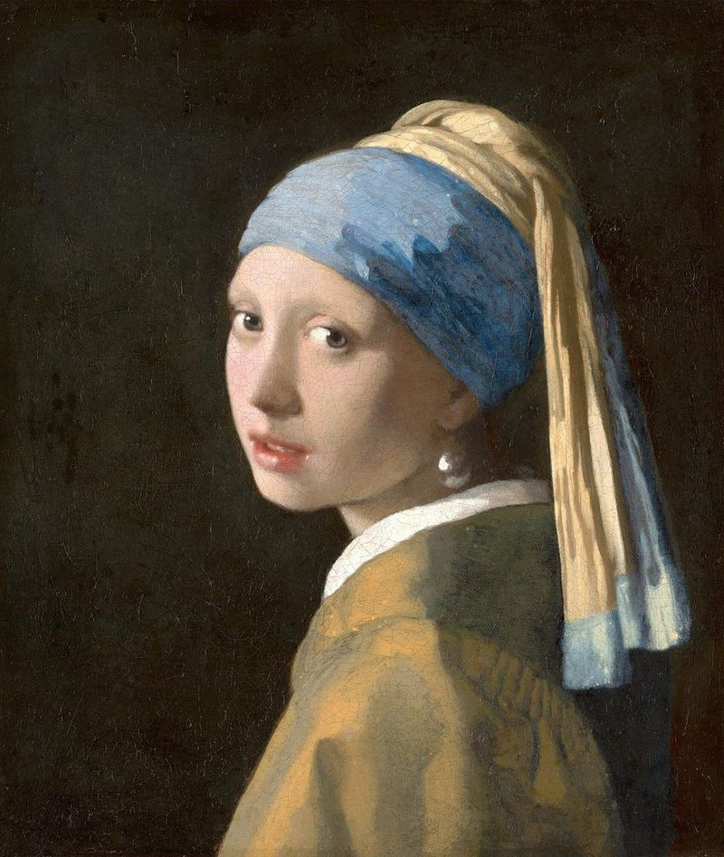
Today
Stage 11 of 11The painting now. The weld and indigo have faded, so the green curtain reads as near-black.
EvidenceGuild register and church records. Your teacher is unknown.
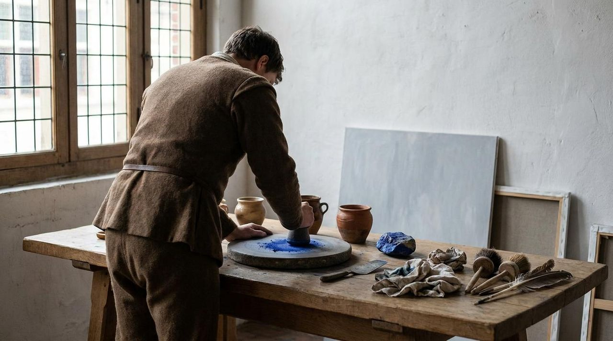
You are Johannes Vermeer, born in Delft in 1632. Your father ran an inn and also dealt in paintings. Nobody knows who taught you. Leonaert Bramer, a family friend, is the usual guess, and Carel Fabritius is another. You may even have trained in Utrecht or Amsterdam.
Whoever it was, you spent four to six years as an apprentice. Most of that was grunt work: grinding pigments, priming canvases and copying your master's pictures while you learned to paint in oil, one layer at a time.
Membership in the Guild of Saint Luke is what lets you sign and sell your own work. You were admitted as a master at 21, though you couldn't pay the six-guilder fee in full. By the mid-1660s you have absorbed the polished finish of the Leiden “fine painters” and the strong light of the Utrecht followers of Caravaggio. Your mother-in-law owns Dirck van Baburen's The Procuress, which hangs on the wall in two of your paintings.
EvidenceThe painting itself, your 1676 estate inventory and a 1696 auction listing. The model is unknown.
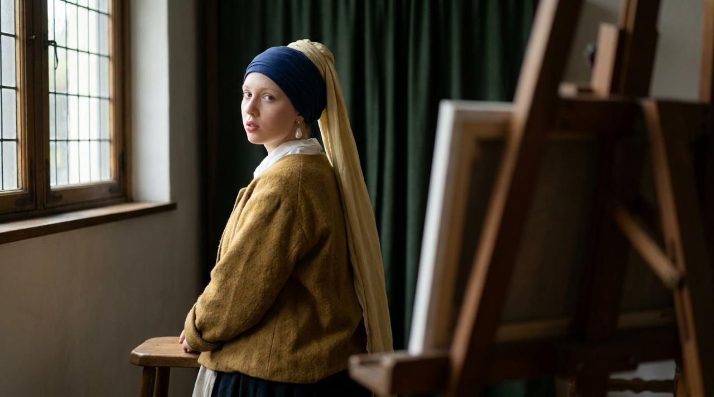
You are painting a tronie, a study of a face or a character type. The model is anonymous and wears exotic or “antique” costume, and the picture is made for the open market rather than for a client. Tronies showed off a painter's skill and sold at modest prices. Buyers didn't care who the model was.
We still don't know who she was, and the 2018 study didn't identify her. Your eldest daughter Maria, about 12 at the time, has been proposed. The maid in Tracy Chevalier's novel is invented.
Skip the paper sketches. Not a single drawing by Vermeer survives, and the evidence in this painting shows the design being worked out directly on the canvas.
EvidenceYour 1676 estate inventory. The arrangement in the plan is inferred from the light in the painting.
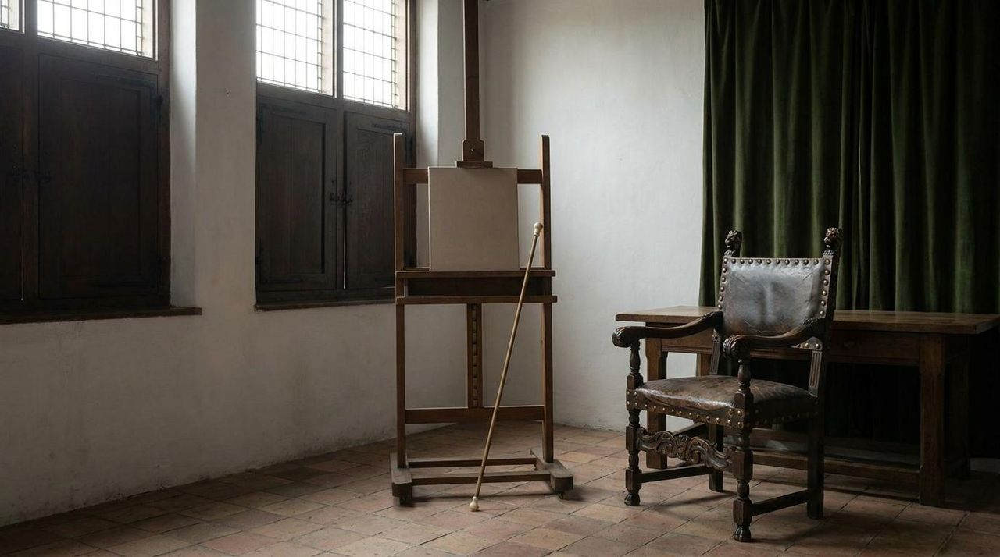
Your studio is an upstairs front room in your mother-in-law Maria Thins's house on the Oude Langendijk in Delft. After your death, the inventory of that room listed its equipment, including a cane with an ivory knob. That was probably your maulstick, the stick a painter uses to steady the hand for small strokes.
Seat the model near a tall leaded window on your left, so light falls from the upper left as it does in nearly all your paintings. Closing the lower shutters lets light in only from above and deepens the shadows. Angle the easel so the same light comes over your left shoulder; that way your painting hand doesn't shade the canvas.
You may well know the device. Optics was a lively subject in Delft. Antonie van Leeuwenhoek, the microscope maker, was born there the same month as you and later administered your bankrupt estate. But your inventory lists no lenses, and nothing in this painting needs one. The outlines were drawn freehand with a brush and then revised (chapter V), which fits working by eye.
EvidencePigment analysis of this painting. How each material was made and prepared is general period practice.
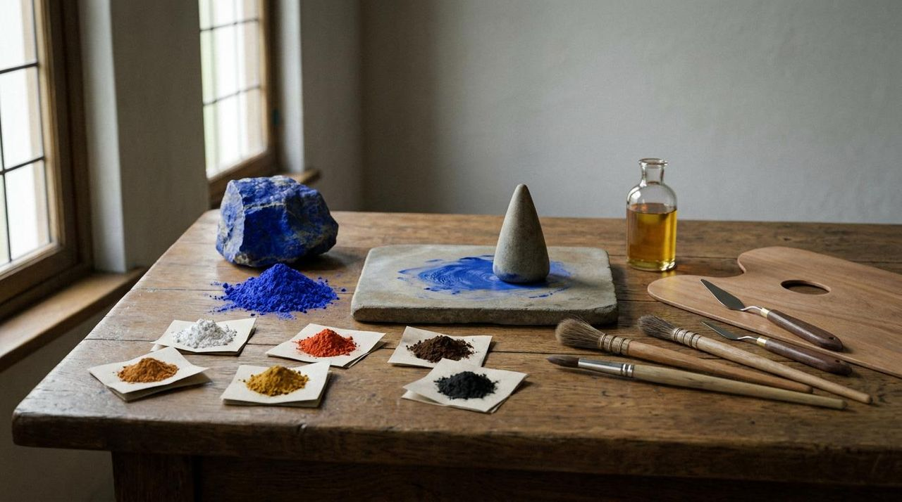
Buy it already primed. A professional primer probably prepared this canvas, not you. The primer stretches plain-weave linen on a frame and seals it with animal-skin glue so the oil won't rot the fibres. Then they spread on a ground of chalk and lead white with a knife, tinted with a little earth pigment, probably umber. The result is a warm, light grey.
The tinted ground gives you a middle tone from the start, so you work up toward the lights and down toward the darks.
Analysis suggests you bought your materials in Delft, but Dutch trade brought them from all over the world. The swatches approximate each pigment's colour in oil.
Strips of lead corroded by vinegar fumes in pots buried in fermenting dung, a method known as the Dutch stack process.
Lapis lazuli, crushed and kneaded into a dough of wax and resin, then washed with lye to release the blue. In your day it was worth more than gold.
Mercury sulfide, made synthetically. The Dutch were leading makers.
Red dye from insects that live on cacti, fixed onto alum to make a see-through red.
Natural earths: yellow, brown and red ochre, and umber.
Charred wood and charred bone.
A blue dye from plants.
A yellow dye from the weld plant, fixed onto alum. Mixed with indigo, it makes green.
Soft white mineral that adds body to the ground and to glazes.
Your paint is pigment ground into linseed oil, pressed from flax. Paint tubes won't exist until 1841, so each working day you grind only what you need. Put a small heap of pigment and a few drops of oil on a stone slab and work them with a muller, a flat-bottomed grinding stone, until smooth.
No pupils of yours are recorded, so this is probably your own job. Grind ultramarine lightly, because over-grinding turns it pale. Lead white is poisonous, so handle it with care.
EvidenceInfrared and X-ray fluorescence scans of this painting, 2018. They show three preparatory stages: the ground, fine black outlines and underlayers.
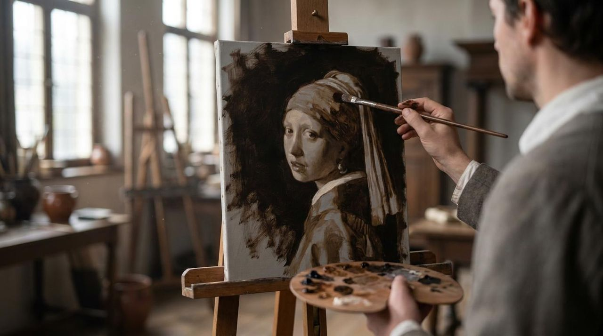
With a fine brush and thin black paint, draw the head, turban and shoulder straight onto the grey ground. Keep the lines light.
Block in light and shade in browns and blacks. Dutch painters called this first stage dead-colouring (doodverf). You are setting down masses, not detail.
This is the subtle part of your method. You choose each underlayer for what will go on top of it, so they vary in colour and thickness. Dark underlayers go under the jacket and the shadowed side of the turban, where they will later supply the shadows. Thick cream-coloured paint goes under the brightest parts of the face. Red lake goes in the shadow of the nose, so it glows warm through the skin paint.
You will move things. In this painting the ear, the top of the turban and the back of the neck were all shifted. Correct the lay-in now, while it is still cheap earth colours.
EvidencePaint samples, scans and microscopy of this painting, from the 1994 restoration and the 2018 study. The cross-sections show only layers named in published analyses, and they are not to scale.
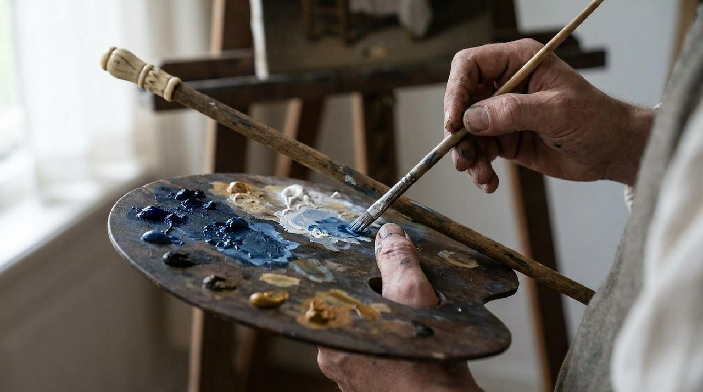
The Mauritshuis found that you worked in a fixed order from back to front: background, face, jacket, collar, turban, and the pearl last. Let each stage dry before you glaze over it. A glaze is a thin, see-through layer of paint, and it needs a dry layer underneath; paint with plenty of lead white is dry to the touch in a few days.
AI-generatedAfter step 6: the pearl, as painted about 1665
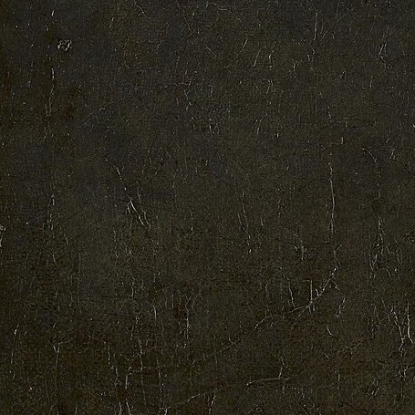
Cover the background with a thin layer of charcoal black and let it dry. Over it, brush a deep, see-through green glaze of indigo and weld, with some chalk and a touch of red ochre, working around the figure.
Model the folds of a curtain; traces of them survive at the upper right. The cool, dark green pushes the warm skin forward.
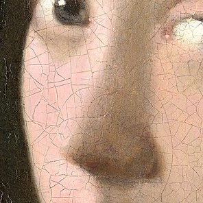
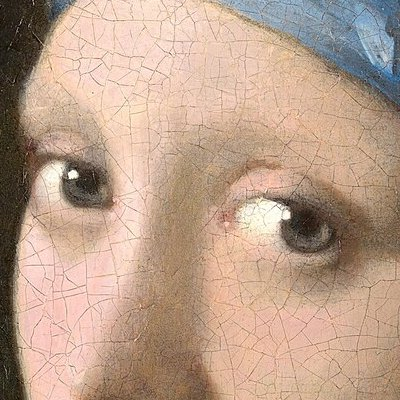
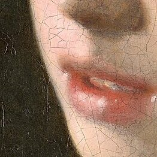
Paint the skin thinly over the underlayers. Mix the lights from lead white tinted with vermilion and a little red lake. Add umber for the cool grey in-between tones and blend them softly. Use umber, perhaps with some black, for the deepest shadows.
Keep the edges soft. Where the light is strongest, let outlines dissolve: the lit side of the nose has no outline at all and melts into the cheek. Save sharp edges for a few accents.
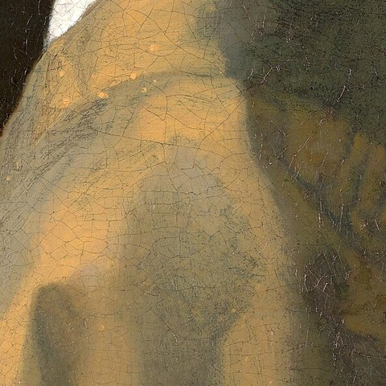
Paint the yellow-brown jacket thinly over its dark underlayer of ochres and charcoal black. Use lead white, yellow ochre, a little brown ochre, and even a pinch of ultramarine to cool it.
Where the jacket turns away from the light, let the dark underlayer show through. Keep it broad and leave out the seams.
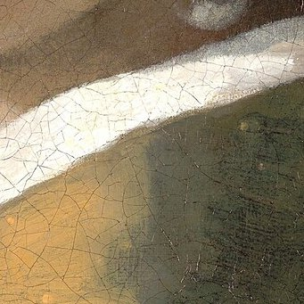
A few thick, confident strokes of lead white. It matters later, because the pearl reflects it.
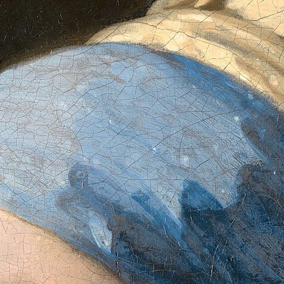
This is the expensive part, and you use plenty of top-quality ultramarine. On the lit left side, paint a light blue of ultramarine and lead white, thicker in the highlights. On the shadow side, glaze ultramarine over the dark underlayer to get a deep, intense blue that no amount of mixing could produce. The darkest accents along the edge are bone black and chalk with a little ultramarine and red lake.
Then paint the yellow cloth in ochre and lead white over darker layers. Catch the folds with a few broad strokes and small dots of light, the pointillés you use for light glinting on fabric.
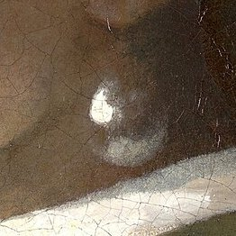
It takes three strokes, laid over the dried brown shadow of the neck. Don't paint an outline, a hook or an ear wire. The pearl is nothing but reflected light, and the viewer's eye supplies the rest.
EvidenceThe signature on the painting and a 1696 auction listing. Drying and varnishing are period practice; the pace is estimated from your known output.
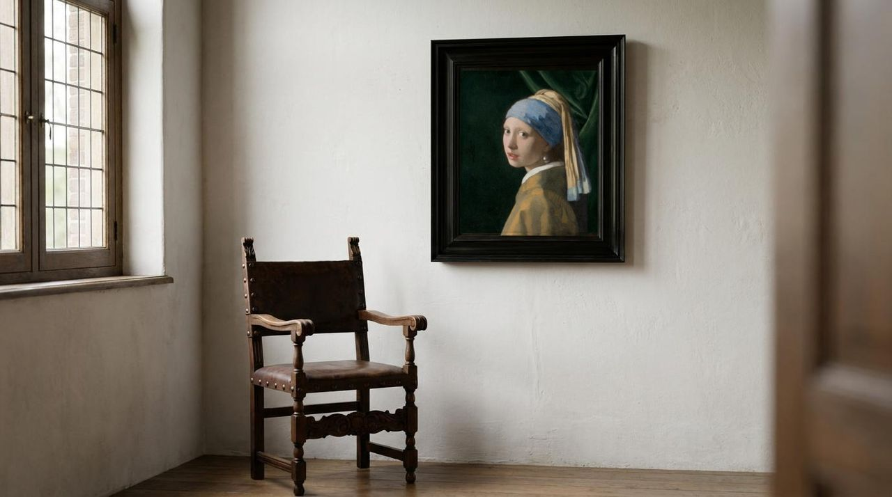
EvidenceThe 2018 study and the 1994 restoration.
If you work from the painting as it looks today, don't copy the decay.